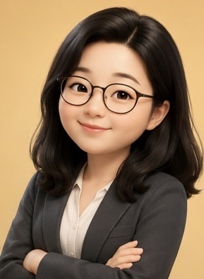
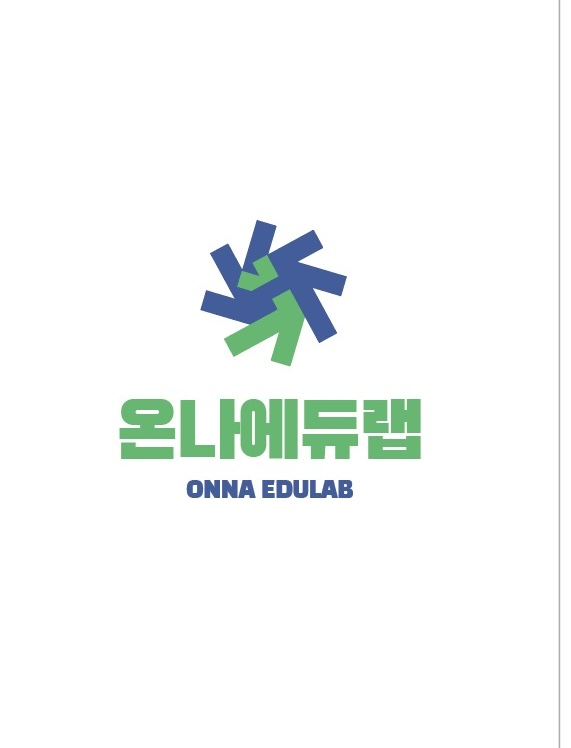

EDUCATOR / CREATOR / FOUNDER
교육의 본질은 그대로,
배움의 가능성은 더 넓게.
교육을 설계하고, 기술로 가능성을 확장합니다.
이영의 · ONNA EDULAB 대표
프로젝트 보기 ↗ 협업 문의
01 / MY STORY
20년의 교육 경험, 새로운 확장
음악교육에서 AI·SW 융합교육까지. 교육의 도구는 달라져도 학습자가 중심이라는 철학은 변하지 않습니다.
20년음악교육기관 운영
88시간폴리텍 AI 활용 교육
ONNA교육 브랜드 기획
02 / PHILOSOPHY
AI는 답이 아니라
문제 해결을 위한 도구입니다.
학습자가 즐겁게 배우고, 충분히 이해하며, 스스로 학습목표에 도달하도록 돕습니다.
문제 발견 → 질문 설계 → 도구 활용 → 제작 → 검증 및 개선 → 공유
03 / EXPERTISE
교육과 기술을 연결합니다.
교육과정 설계
학습자 중심 프로젝트 기반 수업교육용 웹앱 개발
교실과 학교 현장의 문제 해결콘텐츠 기획
디지털 콘텐츠 제작과 교육기업 운영04 / SELECTED WORKS
대표 프로젝트
05 / IN THE FIELD
배움과 성장의 기록
교육 현장, 프로젝트, 협력 활동을 기록합니다.
06 / CAREER
경력과 전문성
2005 실기교사(음악) 교원자격 취득
2005–2025 피아노 교육기관 운영
2025 이후 AI·SW 교육 전문성 확장
2026 학교·대학 AI·SW 교육, 디지털 튜터 활동
07 / ONNA EDULAB
내가 만들어가는 교육기업
지역과 기술을 연결하고, 학습자 중심의 AI·SW 프로젝트 교육을 기획합니다.

08 / LET'S CONNECT
함께 만드는 교육
학교 및 기관 출강 · 교육 콘텐츠 공동개발 · 기관 협력
온나에듀랩 Instagram ↗